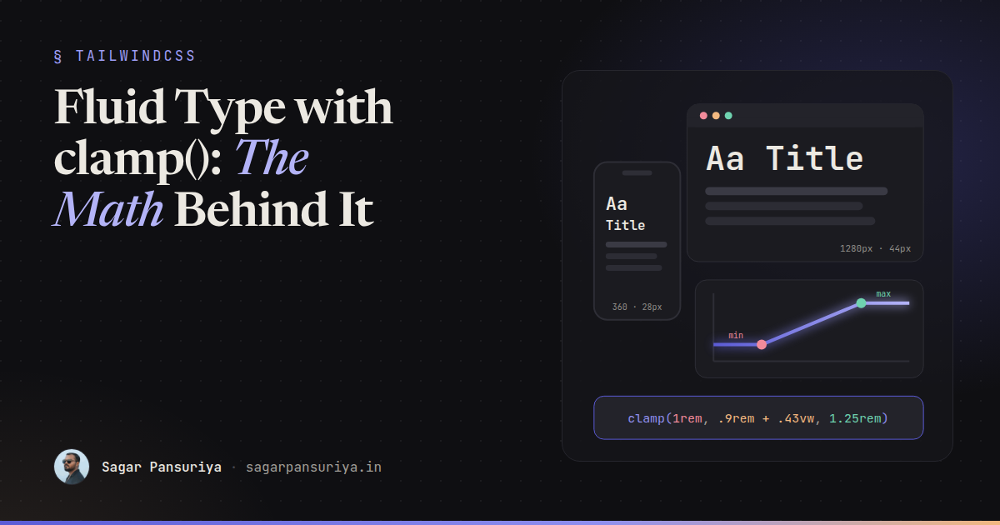
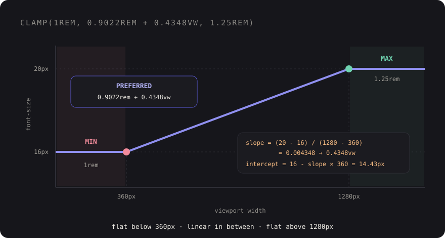

Fluid Type and Spacing with clamp(): The Math, the Accessibility Rules, and Tailwind v4 Tokens


Picture a design handoff with two artboards: mobile at 360px wide, desktop at 1280px. The heading is 28px on one and 44px on the other. The usual translation into CSS is a font size per breakpoint, so the heading jumps from 28px to 36px to 44px as the window crosses md and lg. On a 1000px tablet it's whatever size the nearest breakpoint happened to pick.
What the designer actually drew is a range. At 360px it's 28px, at 1280px it's 44px, and in between it should scale smoothly. CSS can express exactly that with one line: clamp(). The catch is that the middle value, the "preferred" one, is a small piece of algebra that most people copy from a generator without understanding. Once you know the math, you can build a whole type and spacing scale in a few minutes, check it for accessibility, and wire it into Tailwind v4 tokens.
What clamp() actually does
clamp(MIN, PREFERRED, MAX) returns the preferred value, but never less than MIN and never more than MAX. It's shorthand for max(MIN, min(PREFERRED, MAX)). For fluid type, MIN and MAX are your mobile and desktop sizes, and PREFERRED is something that grows with the viewport, which means it contains a vw unit.
The result is three zones: flat at the minimum on small screens, a straight line in the middle, and flat at the maximum on large screens.

The linear-interpolation math
We want a straight line that passes through two points: (360px viewport, 16px text) and (1280px viewport, 20px text). A straight line is intercept + slope × viewport width. Two steps:
slope = (maxSize - minSize) / (maxViewport - minViewport)
= (20 - 16) / (1280 - 360)
= 0.0043478
intercept = minSize - slope × minViewport
= 16 - 0.0043478 × 360
= 14.4348pxNow translate into CSS units. 1vw is 1% of the viewport width, so "slope × viewport width" becomes slope × 100 in vw: 0.4348vw. The intercept goes in rem (divide by 16): 0.9022rem. The min and max go in rem too:
font-size: clamp(1rem, 0.9022rem + 0.4348vw, 1.25rem);Check it: at a 360px viewport, 0.4348vw is 1.565px, plus 14.435px is 16px. At 1280px, it's 5.565px plus 14.435px, which is 20px. The line hits both design points exactly, and clamp() holds it steady outside that range.
That's the whole technique. Every fluid value in the rest of this post is the same two formulas with different inputs.
Why rem + vw, and not just vw
You'll see snippets like font-size: 4vw or clamp(1rem, 2.5vw, 2rem). The first has no floor or ceiling at all. The second has limits, but its preferred value is pure viewport, and pure viewport units have two accessibility problems:
- They ignore the user's font size setting. Someone who sets their browser default to 20px expects text to be bigger.
remrespects that.vwdoesn't know it exists. - They fight browser zoom. Zooming in makes the viewport narrower in CSS pixels, so a
vwvalue gets smaller in CSS pixels while zoom makes each pixel bigger. The two roughly cancel out, and text barely grows. WCAG 1.4.4 asks that text can be resized to 200%, and purevwtext can fail that.
The rem intercept fixes most of this, because that part of the value scales normally with zoom and font settings. Using rem for MIN and MAX matters too: the clamp limits then move with the user's preferences instead of being fixed pixel values.
There's still a limit. The bigger the gap between MIN and MAX, the more of the value comes from vw, and the less zoom helps. A commonly cited rule of thumb is to keep the maximum no more than about 2.5 times the minimum. Body text at 16 to 20px is nowhere near that. A hero heading going from 24px to 96px is, so test it: zoom to 200% at a desktop width and make sure the text actually got bigger.
Building a modular scale
Doing this per element gets old fast. A type scale gives you a small set of sizes that relate to each other, and a fluid modular scale lets the ratio itself change with the viewport. Small screens get a tighter ratio so headings don't crowd out the content. Large screens get a more dramatic one.
Pick a base and ratio for each end. For example, 16px with a 1.2 ratio at 360px, and 18px with a 1.25 ratio at 1280px. Step n is base × ration at each end:
| Step | At 360px | At 1280px | clamp() |
|---|---|---|---|
| -1 | 13.33px | 14.4px | clamp(0.8333rem, 0.8072rem + 0.1159vw, 0.9rem) |
| 0 | 16px | 18px | clamp(1rem, 0.9511rem + 0.2174vw, 1.125rem) |
| 1 | 19.2px | 22.5px | clamp(1.2rem, 1.119rem + 0.3587vw, 1.406rem) |
| 2 | 23.04px | 28.13px | clamp(1.44rem, 1.316rem + 0.5527vw, 1.758rem) |
| 3 | 27.65px | 35.16px | clamp(1.728rem, 1.544rem + 0.8161vw, 2.197rem) |
| 4 | 33.18px | 43.95px | clamp(2.074rem, 1.81rem + 1.17vw, 2.747rem) |
| 5 | 39.81px | 54.93px | clamp(2.488rem, 2.119rem + 1.643vw, 3.433rem) |
Notice how the vw coefficient grows with each step. Small text barely moves, big headings move a lot. That's the scale doing its job.
You don't want to compute these by hand. A tiny script is enough, and it keeps the numbers reproducible when the designer changes the ratio:
// scripts/fluid-scale.mjs
const minVw = 360, maxVw = 1280;
const min = { base: 16, ratio: 1.2 };
const max = { base: 18, ratio: 1.25 };
const rem = (px) => +(px / 16).toFixed(4);
function fluid(minPx, maxPx) {
const slope = (maxPx - minPx) / (maxVw - minVw);
const intercept = minPx - slope * minVw;
return `clamp(${rem(minPx)}rem, ${rem(intercept)}rem + ${+(slope * 100).toFixed(4)}vw, ${rem(maxPx)}rem)`;
}
const names = { '-1': 'sm', 0: 'base', 1: 'lg', 2: 'xl', 3: '2xl', 4: '3xl', 5: '4xl' };
for (const [step, name] of Object.entries(names)) {
const n = Number(step);
console.log(`--text-${name}: ${fluid(min.base * min.ratio ** n, max.base * max.ratio ** n)};`);
}Run it with node scripts/fluid-scale.mjs and paste the output into your theme. If you'd rather not maintain a script, I built a small open-source plugin for exactly this, tailwindcss-fluid-scale. Either way, it's worth understanding what the generated numbers mean, which is the point of this post.
Fluid spacing uses the same math
Type is only half of it. If headings scale but section padding jumps at breakpoints, the layout still feels stepped. Pair each spacing size with a min and max and run the same formula:
| Token | 360px → 1280px | Value |
|---|---|---|
fluid-s | 12px → 16px | clamp(0.75rem, 0.6522rem + 0.4348vw, 1rem) |
fluid-m | 16px → 24px | clamp(1rem, 0.8043rem + 0.8696vw, 1.5rem) |
fluid-l | 24px → 40px | clamp(1.5rem, 1.109rem + 1.739vw, 2.5rem) |
fluid-xl | 40px → 72px | clamp(2.5rem, 1.717rem + 3.478vw, 4.5rem) |
Spacing isn't text, so the zoom concern is weaker here, and larger ratios are fine. The main risk is the opposite: huge padding at 200% zoom eating the screen. Keeping the rem intercept helps with both.
Wiring it into Tailwind v4 tokens
In Tailwind v4 the theme lives in CSS, in an @theme block. Font size utilities read from the --text-* namespace, and spacing utilities (padding, margin, gap and friends) read from --spacing-*. So fluid values become ordinary utilities:
/* resources/css/app.css */
@import "tailwindcss";
@theme {
--text-sm: clamp(0.8333rem, 0.8072rem + 0.1159vw, 0.9rem);
--text-base: clamp(1rem, 0.9511rem + 0.2174vw, 1.125rem);
--text-lg: clamp(1.2rem, 1.119rem + 0.3587vw, 1.406rem);
--text-xl: clamp(1.44rem, 1.316rem + 0.5527vw, 1.758rem);
--text-2xl: clamp(1.728rem, 1.544rem + 0.8161vw, 2.197rem);
--text-2xl--line-height: 1.2;
--text-3xl: clamp(2.074rem, 1.81rem + 1.17vw, 2.747rem);
--text-3xl--line-height: 1.15;
--text-4xl: clamp(2.488rem, 2.119rem + 1.643vw, 3.433rem);
--text-4xl--line-height: 1.1;
--spacing-fluid-s: clamp(0.75rem, 0.6522rem + 0.4348vw, 1rem);
--spacing-fluid-m: clamp(1rem, 0.8043rem + 0.8696vw, 1.5rem);
--spacing-fluid-l: clamp(1.5rem, 1.109rem + 1.739vw, 2.5rem);
--spacing-fluid-xl: clamp(2.5rem, 1.717rem + 3.478vw, 4.5rem);
}Overriding --text-lg and friends replaces Tailwind's default sizes with the fluid ones, so existing markup picks them up without changes. Use unitless line heights on the big steps, so the leading scales with the font size. The Blade stays boring, which is what you want:
<section class="py-fluid-xl">
<div class="mx-auto max-w-5xl space-y-fluid-m px-fluid-m">
<h2 class="text-4xl font-bold">{{ $title }}</h2>
<p class="text-lg text-zinc-600">{{ $intro }}</p>
</div>
</section>No md:text-3xl lg:text-4xl chains. The breakpoints didn't disappear, they moved into the math. If you're already organising primitive and semantic tokens, the fluid values belong in the primitive layer, next to your color and radius primitives.
When the component, not the viewport, should decide
Viewport-based fluid type assumes the text's container grows with the window. A card title in a sidebar doesn't. For those, the same formula works with container query units (cqi) instead of vw, measured against the container's min and max widths. See the container queries post for how that fits into a component library.
Checklist before you ship a fluid scale
- Pick the two viewport widths that match your design artboards, and use them for every token.
- Preferred values are always
rem + vw, never purevw. - MIN and MAX in
rem, so user font settings move them. - Keep MAX within about 2.5× MIN for text, and test large headings at 200% zoom on a desktop width.
- Generate the values with a script or plugin, and commit the inputs (bases, ratios, viewports), not just the output.
- Put the values in
@themeso they're normaltext-*and spacing utilities. - Use container units instead of
vwfor components that live in variable-width slots.
Back to that design handoff: the heading is now one token, the tablet size is no longer an accident, and when the designer asks for a slightly bigger desktop ratio, you change one number and rerun a script.
Discussion